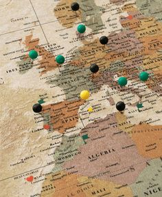
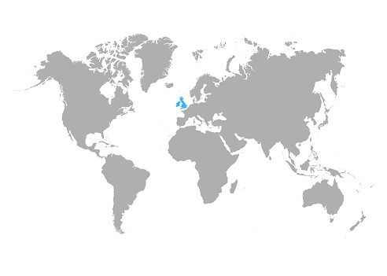

Wil jij via je studie naar het buitenland?
Wij zijn hier om jou te helpen.
Laatste aflevering
[Embedded aflevering]
Wie zijn wij?
Toria
Hoi! Ik ben Toria Kruithof en ik ben samen met Freddy de oprichter van de 'De Grensverleggers'.
Ik heb de Havo afgerond en ik ben nu bezig met de studie Communicatie en Multimedia Design aan de Hogeschool van Amsterdam.
Als ik op vakantie ga wil ik me graag aanpassen aan de mensen daar, dus daarom wil ik graag deze podcast maken om er meer over te weten te komen.
Aangezien wij zelf ook studeren wilden we graag onszelf en anderen helpen met wat ze allemaal moeten regelen om te studeren in het buitenland.
Freddy
Mijn naam is Freddy en ik ben student aan de Hogeschool van Amsterdam.
Ik studeer Communication and Multimedia Design en ik wil later in mijn studie misschien in het buitenland stage lopen of studeren,
maar dan wil ik wel graag weten hoe dat gaat. Ik kan niet de enige persoon met die vraag zijn, dus vandaar deze podcast.
Veel luisterplezier!
Onze kernwaarden
-
Onderzoek
Wij doen ons best om al je belangrijkste vragen goed te beantwoorden
-
Eerlijkheid
Wij zijn eerlijk over de dingen die we onderzoeken
-
Duidelijkheid
Wij doen ons best om jou zo duidelijk mogelijk te informeren.
Waarom zou je nou naar onze podcast luisteren?
Ons doel met deze podcast is om jou te helpen met je stage of reis naar het buitenland. Wij zoeken uit wat je moet regelen qua documenten en vervoer, maar ook met hoe je je in andere landen moet gedragen. Hier hebben we het dan over dingen, zoals culturele gewoontes of sociale verwachtingen, zoals hoe je mensen beleefd aanspreekt, of speciale regels tijdens het eten. Zo lijkt het al heel wat minder intimiderend om naar het buitenland te gaan, toch?
Reviews
-
Layla Elyandousi
Leuke podcast om in de trein naar te luisteren.
Ik leer graag wat nieuws over andere culteren -
Bart Meijer
Superveel geleerd van deze podcast!
Ik wist precies wat ik nodig had toen ik naar Chili wilde. -
Olivia Dekker
Lekker interessant gewoon.
Heeft goed geholpen met mijn stage.
Onze behandelde landen
Hier zie je een kaart van alle landen die we al behandeld hebben in onze podcast. Deze kaart maakt het eenvoudig om te ontdekken of het land waarin je geïnteresseerd bent al aan bod is gekomen. Met deze kaart kun je makkelijk terugkijken welke landen en ook vooruit te kijken naar de landen die we nog willen verkennen. Uiteindelijk hopen we de kaart volledig in te kleuren. Als je nieuwsgierig bent naar een specifiek land of als je suggesties hebt voor toekomstige afleveringen, dan horen we dat graag! Jouw feedback is belangrijk voor ons en helpt ons om de podcast te verbeteren en aan te passen aan de interesses van onze luisteraars. Dus, luister je mee? We kijken ernaar uit om samen met jou deze ontdekkingsreis voort te zetten!
